| Res | Horse | Price | BSP | Dr | Form | Crse | Suit | OR | Spd | TF | Last comment |
|---|---|---|---|---|---|---|---|---|---|---|---|
| 6 | 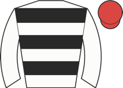 Spaceage Love Song ◆ 1 | 3.75 | - | 3 | 1-7-7-5-2-2 | going✓ trip✓ trk✓ | 49 | 84 | ★★★☆☆ | Chased leaders, led over 3f out, ridden 2f out, headed over 1f out, no extra inside final | |
| 2 | 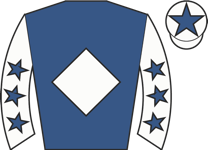 Charencey M2 | 4.33 | - | 5 | 4-5-6-5-7-6 | 1r | 50 ↓ | 86 | ★★★★★ | Mid-division on outer, closed into fourth over 4f out, pushed along and outpaced 3f out, s | |
| 1 | 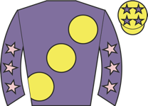 Nymphaea ◆ 2 | 4.50 | - | 1 | 6-4-3-2-1-5 | 1r 1W | going✓ trk✓ | 49 | 75 | ★★★★☆ | Held up towards rear, outpaced over 3f out, hung right over 1f out, soon weakened |
| 3 | 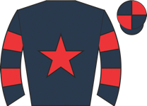 Myna ◆ 3 | 5.00 | - | 6 | 3-6-1-4-4-2 | going✓ trip✓ | 48 | 82 | ★★★★☆ | Dwelt, in rear, pushed along and effort on outside 3f out, went second 1f out, no chance w | |
| 5 | 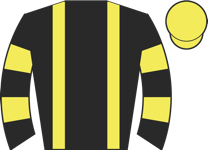 Hello Garda ⚠ hard trk ▼ cls | 7.00 | - | 2 | 8-10-12-4-2-3 | going✓ trip✓ | 50 | 73 | ★★★☆☆ | Soon raced in second, went right and lost one place 4th, outpaced by leading pair after 2 | |
| 4 | 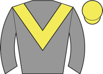 Arc At Her ⚠ ground | 15.00 | - | 4 | 9-4-12-9 | 47 | 73 | ★★☆☆☆ | Chased leaders, pushed along over 4f out, weakened 3f out |
| Res | Horse | Price | BSP | Dr | Form | Crse | Suit | OR | Spd | TF | Last comment |
|---|---|---|---|---|---|---|---|---|---|---|---|
| 2 | 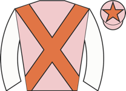 Too Too Divine ◆ 1 ★ EYE | 2.62 | - | 4 | 4-5-3 | 71 | 90 | ★★★★★ | Towards rear, shaken up over 2f out, ridden over 1f out, kept on well inside final furlong | ||
| 1 | 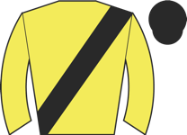 Remi Mae ◆ 2 ⚠ ground ▼ cls | 3.75 | - | 1 | 7-2-3-11-3 | trip✓ trk✓ draw✓ | 69 | 91 | ★★★☆☆ | Wore hood to start, veered sharply right and pulled hard early, soon raced in second, outp | |
| 5 | 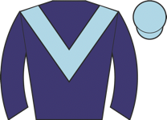 March Of Time ◆ 3 | 4.00 | - | 5 | 3-4 | 88 | Reared start and slowly away, in rear, pushed along over 2f out, no real progress | ||||
| 3 | 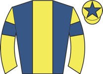 Honky Tonk Girl ★ EYE ▲ cls | 6.50 | - | 3 | 5-9-4 | 92 | ★★★★☆ | Wore hood to post, midfield, ridden over 2f out, kept on inside final furlong, took fourth | |||
| 6 | 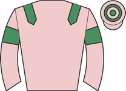 Hanaan ▲ cls | 15.00 | - | 2 | 9 | draw✓ | 93 | Wore red hood to post, mid-division, pushed along 2f out, weakened 1f out | |||
| 4 | 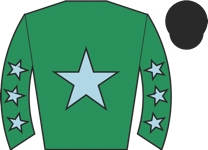 Cercis ⚠ draw ▲ cls | 34.00 | - | 7 | 5 | 1r | 89 | Wore hood to post, edged left leaving stalls, prominent, ridden 2f out, no extra when hung | |||
| 7 | 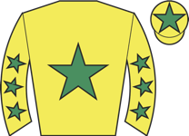 Baby G ⚠ draw | 101.00 | - | 8 | 8-5 | 88 | Chased leaders, pushed along and weakened from halfway | ||||
| 8 | 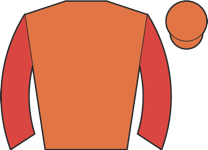 Mimime ⚠ draw ⚠ ground | 101.00 | - | 6 | 7-10 | 90 | Taken down early wearing hood, handy on outer, ridden along over 2f out, drifted right and |
| Res | Horse | Price | BSP | Dr | Form | Crse | Suit | OR | Spd | TF | Last comment |
|---|---|---|---|---|---|---|---|---|---|---|---|
| 1 | 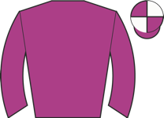 Glamorize ◆ 1 ★ EYE | 1.73 | - | 3 | 2-13-1 | 1r 1W | going✓ trip✓ trk✓ | 84 | 92 | ★★★★★ | Chased leader, few lengths down when ridden over 1f out, rallied and kept on well inside f |
| 0 | 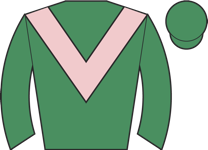 Location Location ◆ 2 ▲ cls | 3.00 | - | 4 | 5-3-2 | going✓ | 72 | 92 | Raced keenly in midfield, smooth progress into second 2f out, soon ridden to challenge, ke | ||
| 3 | 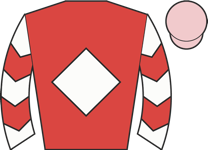 Our Fella ▲ cls | 3.25 | - | 1 | 5-3-10-2 | going✓ trip✓ | 64 | 91 | ★★★★☆ | Prominent, slightly hampered over 2f out, pushed along and pressed leader 2f out, ridden o | |
| 2 | 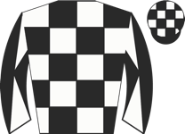 Havana Gift ◆ 3 | 5.50 | - | 2 | 4-7-2-4 | 1r | trip✓ trk✓ | 68 | 92 | ★★★☆☆ | In rear near side group of four, headway inside final furlong, kept on but not pace to cha |
| Res | Horse | Price | BSP | Dr | Form | Crse | Suit | OR | Spd | TF | Last comment |
|---|---|---|---|---|---|---|---|---|---|---|---|
| 5 | 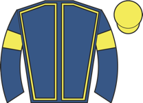 Sahm Naif ◆ 2 | 2.88 | - | 3 | 5-8-7-4-1-1 | going✓ trk✓ | 60 | 88 | ★★★★☆ | Mounted in chute and went to post early in hood, made all, ridden over 3f out, pressed for | |
| 3 | 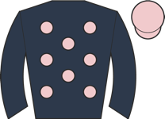 Beauty Generation ◆ 3 M2 ★ EYE | 3.00 | - | 6 | 7-5-3-4-5-1 | 1r 1W | going✓ trk✓ | 58 ↓ | 87 | ★★★☆☆ | Prominent, waiting for room over 1f out, hung right when led inside final 110yds, ran on w |
| 1 | 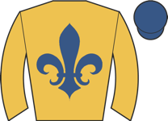 Takeitorleaveit ◆ 1 ★ EYE | 3.75 | - | 5 | 4-1-7-2-2-2 | going✓ trip✓ trk✓ | 59 | 87 | ★★★★★ | Led, pushed along over 2f out, soon ridden, headed inside final furlong, rallied to lead f | |
| 4 | 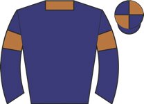 The Bureau Club ⚠ ground ▼ cls | 13.00 | - | 1 | 4-4-6-7-7 | 60 | 89 | ★★★☆☆ | Held up towards rear, some headway 2f out, outpaced inside final furlong, weakened inside | ||
| 6 | 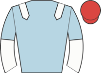 Horwich ⚠ ground ▼ cls | 21.00 | - | 4 | 9-12-4-6-6-12 | 60 ↓ | 89 | ★★☆☆☆ | Held up in rear, asked for effort over 2f out, never involved | ||
| 2 | 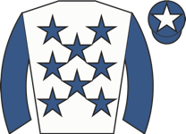 Katalyst | 21.00 | - | 2 | 6-5-6-4-10-13 | 2r | 60 ↓ | 78 | ★★☆☆☆ | Slowly away, always outpaced in rear |
| Res | Horse | Price | BSP | Dr | Form | Crse | Suit | OR | Spd | TF | Last comment |
|---|---|---|---|---|---|---|---|---|---|---|---|
| 4 | 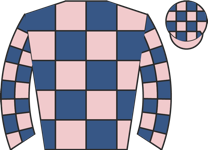 Great Mates ◆ 3 ▲ cls | 3.75 | - | 4 | 3-1-2-4-6-1 | going✓ trip✓ trk✓ | 77 | 92 | ★★★★☆ | Tracked leader, pushed along over 2f out, led over 1f out and ridden, edged right inside f | |
| 5 | 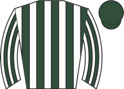 Darzah M2 ★ EYE | 4.00 | - | 3 | 5-1-8-1 | going✓ trip✓ trk✓ | 81 | 86 | ★★★★☆ | Towards rear, in behind leaders waiting for room 2f out, ridden and headway over 1f out, s | |
| 2 | 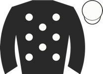 Distant Shore | 4.50 | - | 5 | 1-3-5-2 | going✓ trip✓ trk✓ | 79 | 90 | ★★★★★ | Went to post early, towards rear, ridden and headway 2f out, ran on inside final furlong, | |
| 3 | 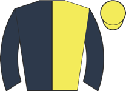 Porth Eilian ◆ 1 ★ EYE ▲ cls | 5.00 | - | 2 | 7-5-4-1-3-1 | going✓ trip✓ trk✓ | 79 | 91 | ★★★☆☆ | Prominent, closed on leaders over 2f out pushed along when led inside final furlong, ridde | |
| 1 | 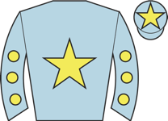 Luna Celeste ◆ 2 | 6.00 | - | 1 | 2-2-1-2 | going✓ trip✓ trk✓ | 75 | 90 | ★★★☆☆ | Prominent, ridden along over 2f out, pressed leader 1f out, edged left but went second ins |
| Res | Horse | Price | BSP | Dr | Form | Crse | Suit | OR | Spd | TF | Last comment |
|---|---|---|---|---|---|---|---|---|---|---|---|
| 0 | 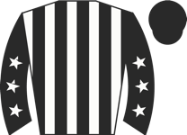 Emperor Caradoc ◆ 2 ★ EYE ⚠ draw | 2.25 | - | 6 | 13-1-3-5-6-2 | 1r 1p | going✓ trip✓ trk✓ | 75 | 91 | ★★★★★ | Prominent, ridden along over 2f out, pressed leader 1f out, kept on inside final furlong, |
| 0 | 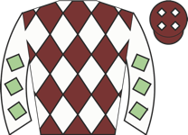 Sixtygeesbaby M2 ⚠ draw ⚠ ground ▼ cls | 4.50 | - | 8 | 8-13-5-10-8-5 | 75 ↓ | 91 | ★★★★☆ | Close up, ridden 2f out, faded over 110yds out | ||
| 0 | 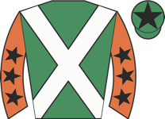 Hoodie Hoo ◆ 1 ▼ cls | 6.00 | - | 2 | 4-6-2-4-4-5 | trip✓ draw✓ | 74 | 95 | ★★★★☆ | Rear of midfield, chased leaders 2f out, repeatedly denied clear run inside final furlong, | |
| 0 | 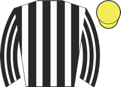 Logi Bear ⚠ ground ▼ cls | 8.00 | - | 5 | 19-16-6-6-2-9 | trip✓ | 70 ↓ | 93 | ★★★☆☆ | Held up in rear, ridden along over 2f out, some headway over 1f out, faded inside final fu | |
| 0 | 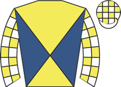 Jenever ⚠ ground | 15.00 | - | 1 | 11-5-6-5-7-8 | draw✓ | 72 ↓ | 96 | ★★★☆☆ | Wore hood to post, took keen hold, prominent, ridden and lost position 2f out, no impressi | |
| 0 | 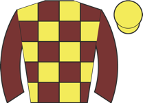 Dark Kestrel ⚠ draw | 17.00 | - | 7 | 4-4-6-7-3-8 | 55 ↑ | 94 | ★★☆☆☆ | Held up in rear, asked for effort 2f out, never in contention | ||
| 0 | 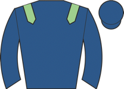 Loquella ◆ 3 ⚠ ground ▼ cls | 21.00 | - | 4 | 1-2-6-5-7 | trip✓ trk✓ | 71 | 91 | ★★☆☆☆ | Mid-division, pushed along and closed over 2f out, ridden and dropped away over 1f out | |
| 0 | Southern Warrior | 26.00 | - | 3 | 5-4-1-3-5-10 | trip✓ | 67 | 91 | ★★☆☆☆ | Always towards rear, outpaced 2f out, soon lost touch |
| Res | Horse | Price | BSP | Dr | Form | Crse | Suit | OR | Spd | TF | Last comment |
|---|---|---|---|---|---|---|---|---|---|---|---|
| 0 | 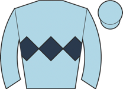 Velvet Goldmine ◆ 2 ⚠ ground | 2.75 | - | 2 | 8-3-2 | trk✓ | 69 | 94 | ★★★☆☆ | Pressed leader, pushed along well over 1f out, ridden over 1f out, soon edged left and led | |
| 0 | 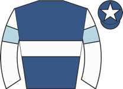 Come On Over ◆ 1 M2 ▲ cls | 2.88 | - | 3 | 7-11-8-4-2-1 | going✓ | 68 ↓ | 95 | ★★★★★ | Wore hood to start, raced in far-side group and son led, ridden 1f out, faced sustained ch | |
| 0 | 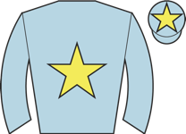 Coyy ◆ 3 | 3.25 | - | 5 | 8-11-1-3-7-4 | going✓ trip✓ | 71 | 94 | ★★★☆☆ | Towards rear, pushed along over 2f out, stayed on steadily, moved into never dangerous fou | |
| 0 | 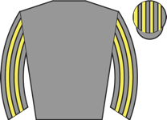 Mondammej ⚠ ground ▼ cls | 3.75 | - | 4 | 13-22-2-4-14-6 | trip✓ | 74 | 94 | ★★★★☆ | Taken down early, towards rear, some headway 1f out, ridden inside final furlong, weakened | |
| 0 | 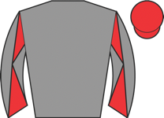 Squealer ⚠ ground ▼ cls | 7.00 | - | 1 | 16-6-9-13-5-8 | 73 ↓ | 94 | ★★★★☆ | Mounted on chute, midfield, outpaced inside final furlong, soon weakened |
| Res | Horse | Price | BSP | Dr | Form | Crse | Suit | OR | Spd | TF | Last comment |
|---|---|---|---|---|---|---|---|---|---|---|---|
| 0 | 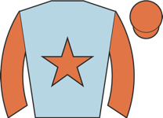 Call Glory ◆ 2 | 5.00 | - | 8 | 4-2-3-5-6-2 | going✓ trip✓ | 55 | 92 | ★★★★★ | Wore hood to post, in touch, shaken up 3f out, steady headway over 2f out, ridden over 1f | |
| 0 | 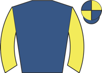 Beau Jardine ◆ 3 M2 | 6.00 | - | 6 | 7-7-6-4-1-7 | 1r | trip✓ | 50 | 92 | ★★★☆☆ | Mounted on chute, midfield, pushed along 2f out, weakened over 1f out |
| 0 | 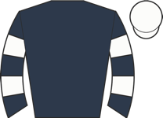 Shades Of May ◆ 1 | 6.50 | - | 1 | 8-1-4-1-1-8 | trip✓ trk✓ | 54 ↑ | 94 | ★★★☆☆ | Raced wide in midfield, asked for effort 2f out, never a danger | |
| 0 | 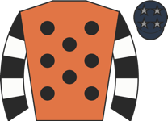 Margorie ⚠ ground | 7.00 | - | 5 | 10-10-6-7-9-5 | 55 ↓ | 92 | ★★★☆☆ | In rear stands side, pushed along 2f out, ran on final furlong, never nearer | ||
| 0 | Happier ⚠ ground | 8.00 | - | 7 | 9-2-6-11-4-9 | 50 ↓ | 92 | ★★☆☆☆ | Midfield, ridden over 2f out, weakened final 110yds | ||
| 0 | 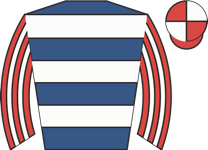 Amathus ⚠ ground | 9.00 | - | 10 | 13-9-2-9-8-4 | trk✓ | 52 | 88 | ★★★★☆ | Ran in snatches, held up in rear, headway and in touch entering final furlong, went fourth | |
| 0 | 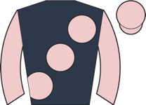 Stacey Racey | 11.00 | - | 4 | 5-7-2-4-3-8 | trip✓ trk✓ | 47 | 87 | ★★★☆☆ | Took keen hold, in touch with leaders, ridden over 3f out, weakened after 2f out | |
| 0 | 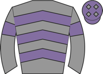 Endowed ▼ cls | 11.00 | - | 9 | 1-1-2-7-9-6 | 1r 1p | going✓ trip✓ trk✓ | 50 ↑ | 86 | ★★★☆☆ | Led early, soon headed and in touch with leaders, ridden along and weakened over 1f out |
| 0 | 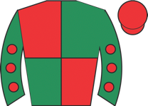 Snooker McCrew ⚠ ground | 15.00 | - | 3 | 14-5-9-1-7-5 | 1r | 49 ↓ | 88 | ★☆☆☆☆ | Chased leader, ridden and weakened quickly over 2f out | |
| 0 | 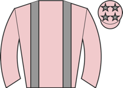 Miraflores | 15.00 | - | 2 | 4-5-8-7-6-4 | 45 | 89 | ★★☆☆☆ | Mounted in chute, wore hood to post, handy, led after 2f, joined over 2f out, edged left o |
| Res | Horse | Price | BSP | Dr | Form | Crse | Suit | OR | Spd | TF | Last comment |
|---|---|---|---|---|---|---|---|---|---|---|---|
| 0 | Soldier Of The Sea ◆ 1 ★ EYE | 2.50 | - | 3 | 1 | going✓ trip✓ | 88 | Wore hood to post, dwelt start, ridden and headway when switched left over 2f out, stayed | |||
| 0 | Gentle Hurricane ◆ 2 | 3.25 | - | 5 | unraced | - | |||||
| 0 | High Tower ◆ 3 | 5.00 | - | 1 | unraced | - | |||||
| 0 | Yellow Mission | 9.00 | - | 2 | unraced | - | |||||
| 0 | Bollengo Boy ⚠ hard trk ⚠ ground | 17.00 | - | 6 | 8-7 | 85 | Chased leaders, lost place over 2f out, well held from over 1f out | ||||
| 0 | Hackpen Hill ⚠ hard trk ⚠ ground | 21.00 | - | 4 | 8 | 89 | Took keen hold, held up in midfield, ridden over 2f out, soon weakened |
| Res | Horse | Price | BSP | Dr | Form | Crse | Suit | OR | Spd | TF | Last comment |
|---|---|---|---|---|---|---|---|---|---|---|---|
| 0 | Topaz ◆ 2 | 1.73 | - | 7 | 2-15-2 | going✓ trip✓ | 83 | 93 | ★★★★★ | Raced freely, led, shaken up when joined over 1f out, edged slightly left and headed when | |
| 0 | Silver Sovereign | 4.50 | - | 6 | unraced | - | |||||
| 0 | Blue Flight ◆ 1 | 6.00 | - | 3 | 1 | going✓ trip✓ | 88 | Held up in behind leaders, still going okay 2f out, shaken up and pressed leaders over 1f | |||
| 0 | Happy Enough ⚠ ground ▼ cls | 6.00 | - | 2 | 7 | 89 | Raced keenly, went right start, in rear, ridden and some headway 2f out, no response over | ||||
| 0 | Lola De Valence | 9.00 | - | 5 | unraced | - | |||||
| 0 | Downonmainstreet ⚠ ground | 9.00 | - | 1 | 7 | 86 | Wore hood to post, prominent, ridden along over 2f out, weakened over 1f out | ||||
| 0 | Golden Caturra ◆ 3 | 34.00 | - | 4 | unraced | - |
| Res | Horse | Price | BSP | Dr | Form | Crse | Suit | OR | Spd | TF | Last comment |
|---|---|---|---|---|---|---|---|---|---|---|---|
| 0 | Blue Prince ◆ 1 ▲ cls | 2.25 | - | 3 | 10-9-3-3-1-3 | 1r 1W | trk✓ | 85 ↑ | 95 | ★★★★☆ | Taken down early and wore hood to post, held up in rear, steady headway towards centre fro |
| 0 | Celeborn ◆ 2 M2 | 2.50 | - | 4 | 3-2-1-5-14-5 | 1r 1p | trip✓ trk✓ | 88 ↑ | 95 | ★★★★★ | Slowly away, held up in midfield, ridden 2f out, headway over 1f out, kept on same pace, l |
| 0 | Arctic Thunder ◆ 3 ▲ cls | 7.50 | - | 1 | 3-4-12-7-6-8 | 81 | 95 | ★★★☆☆ | Wore red hood to post, towards rear, pushed along halfway, plugged on, never on terms | ||
| 0 | Allegresse ⚠ ground ▼ cls | 9.00 | - | 2 | 1-1-7-4-9-16 | trip✓ | 88 | 82 | ★★★☆☆ | Wore hood to post, midfield, ridden over 2f out, soon beaten |
| Res | Horse | Price | BSP | Dr | Form | Crse | Suit | OR | Spd | TF | Last comment |
|---|---|---|---|---|---|---|---|---|---|---|---|
| 0 | Dottie Diamond ◆ 1 ⚠ draw | 3.50 | - | 2 | 9-6-6-4-1-1 | going✓ trip✓ trk✓ | 55 ↑ | 94 | ★★★★★ | Went to post early in hood, prominent, ridden over 2f out, headway to press leader enterin | |
| 0 | Little Miss Magic ◆ 3 M2 | 3.75 | - | 5 | 7-6-7-5-1-2 | going✓ trip✓ trk✓ | 54 ↑ | 92 | ★★★★☆ | Held up in rear, ridden to make headway from 1f out, took second inside final 110tds, not | |
| 0 | Dreambird Dolly ◆ 2 | 4.50 | - | 7 | 11-8-2-1-10-2 | going✓ trip✓ draw✓ | 53 ↑ | 92 | ★★★☆☆ | Led, ridden 2f out, pressed for lead entering final furlong, soon headed, always held towa | |
| 0 | Follow My Heart ★ EYE | 9.00 | - | 9 | 5-9-4-6-3-4 | 2r | draw✓ | 45 | 91 | ★★★★☆ | Held up in rear, ridden 2f out, kept on inside final furlong, nearest finish |
| 0 | Cabeza De Llave ★ EYE ⚠ draw | 11.00 | - | 3 | 3-6-2-5-3-8 | going✓ trip✓ | 53 | 93 | ★★★☆☆ | Took keen hold, held up in midfield, ridden 2f out, kept on inside final furlong, no dange | |
| 0 | Roman Spring ⚠ ground ▼ cls | 15.00 | - | 8 | 3-6-10-7-3-12 | 1r 1p | trk✓ draw✓ | 50 ↓ | 92 | ★★☆☆☆ | Edged right start, keen early, towards rear, never dangerous |
| 0 | Reporter ⚠ ground | 15.00 | - | 4 | 3-4-8-4-6-13 | 54 ↓ | 89 | ★★☆☆☆ | Front mid-division, pushed along 2f out, weakened 1f out | ||
| 0 | Mademoiselle Belle ⚠ draw | 21.00 | - | 1 | 5-9-2-6-3-9 | going✓ trk✓ | 54 | 89 | ★★☆☆☆ | Held up in midfield, ridden 3f out, kept on same pace over 1f out | |
| 0 | Battle Point ⚠ ground | 34.00 | - | 6 | 4-4-10-5-7-7 | 45 | 88 | ★★☆☆☆ | Tracked leaders, ridden over 1f out, faded final 110yds |
| Res | Horse | Price | BSP | Dr | Form | Crse | Suit | OR | Spd | TF | Last comment |
|---|---|---|---|---|---|---|---|---|---|---|---|
| 0 | Mountbatten ◆ 2 | 2.10 | - | 8-7-7-1-4 | trk✓ | 70 | 85 | Led, pushed along over 3f out, ridden over 2f out, headed over 1f out, soon beaten | |||
| 0 | Fair Dinkum M2 ▼ cls | 2.50 | - | 2-12-8-5-2-4 | 2r 1p | going✓ trk✓ | 67 | 84 | ★★★★☆ | Keen, raced in rear, ridden over 2f out, ran on one paced inside final furlong | |
| 0 | Curran ◆ 1 ▼ cls | 2.88 | - | 4-5-14-1-6-5 | trip✓ trk✓ | 70 | 80 | ★★★★★ | Midfield, ridden over 2f out, no telling impression | ||
| 0 | Masterdream ◆ 3 | 6.00 | - | 1-9-3-3---3 | 59 ↑ | 62 | ★★★☆☆ | Soon raced in close second, not fluent 4th, led on bend before 3 out, joined 3 out, headed | |||
| 0 | Blue Siam ▲ cls | 6.00 | - | 5-5-4-3-4-3 | trk✓ | 51 ↓ | 57 | ★★☆☆☆ | Held up in rear, pushed along 3f out, ridden and hung right when took third 2f out, outpac |
| Res | Horse | Price | BSP | Dr | Form | Crse | Suit | OR | Spd | TF | Last comment |
|---|---|---|---|---|---|---|---|---|---|---|---|
| 0 | Zaraquelle ◆ 1 | 4.33 | - | 5 | 7-8-4-3-2-3 | 1r 1p | trk✓ | 56 ↓ | 81 | ★★★★★ | Held up in midfield, ridden over 2f out, kept on over 1f out, went third final 110yds |
| 0 | Into Combat M2 ⚠ ground | 6.00 | - | 3 | 6-7-8-10-10-8 | 59 ↓ | 84 | ★★☆☆☆ | In touch, bumped when ridden over 2f out, soon weakened | ||
| 0 | Three Yorkshiremen M2 ⚠ ground | 6.00 | - | 7 | 6-7-8-9-9-5 | 4r | 58 ↓ | 89 | ★★★★☆ | Prominent early, mid-division, headway over 2f out, weakened inside final furlong | |
| 0 | Beaune ◆ 3 | 7.00 | - | 1 | 2-1-1-8-7-4 | 3r 2W | going✓ trk✓ | 58 ↑ | 82 | ★★★★☆ | Towards rear, headway 3f out, pushed along and short of room when switched right over 2f o |
| 0 | The Pug ⚠ ground | 7.00 | - | 10 | 7-4-9-12-3-- | 2r | 46 | 85 | ★★★☆☆ | Keen in rear, jolted right and unseated rider after 1f | |
| 0 | Daaris ◆ 2 | 9.00 | - | 2 | 4-3-1-6-6-9 | 3r 1W | going✓ trip✓ trk✓ | 60 | 83 | ★★☆☆☆ | Midfield, headway to press winner after 4f, ridden 3f out, outpaced and came wide on home |
| 0 | Hill Station ⚠ ground ▼ cls | 11.00 | - | 4 | 1-2-2---5-8 | 2r | 59 ↓ | 77 | ★★☆☆☆ | Prominent, pushed along and lost place over 2f out, soon weakened quickly | |
| 0 | Shopaholic ⚠ ground ▼ cls | 13.00 | - | 6 | 5-7-9 | 60 | 87 | ★★★☆☆ | Midfield, ridden 3f out, no impression | ||
| 0 | One Million Dreams ⚠ ground | 17.00 | - | 11 | 11-3-10-9-9-6 | 57 ↓ | 79 | ★★☆☆☆ | Chased winner until over 4f out, lost place over 3f out, well beaten final 2f | ||
| 0 | Freewheelin ⚠ ground ▼ cls | 51.00 | - | 8 | 4-11-4-10-7-8 | 2r | 45 | 71 | ★☆☆☆☆ | Very slowly away, always in rear | |
| 0 | Fighting Poet ⚠ hard trk ⚠ ground | 67.00 | - | 9 | 9-9-4-13-6-8 | 46 ↓ | 73 | ★★☆☆☆ | Held up in rear, pushed along over 2f pout, soon outpaced, detached final furlong |
| Res | Horse | Price | BSP | Dr | Form | Crse | Suit | OR | Spd | TF | Last comment |
|---|---|---|---|---|---|---|---|---|---|---|---|
| 0 | Bellasio ◆ 2 ★ EYE | 5.50 | - | 8 | 2-6-5-5-2-1 | trip✓ draw✓ | 64 | 91 | ★★★★☆ | Chased leader, headway and ridden to lead over 1f out, kept on gamely inside final furlong | |
| 0 | Kaaranah ◆ 1 M2 | 6.00 | - | 13 | 6-1-1-6-5-1 | 4r 3W | going✓ trip✓ trk✓ | 70 ↑ | 95 | ★★★★☆ | Went right start, midfield, ridden over 2f out, headway over 1f out, kept on and led enter |
| 0 | Pulsar Star ⚠ draw | 7.00 | - | 2 | 4-2-2-9-6-6 | going✓ trk✓ | 70 | 92 | ★★★★★ | Chased leader, ridden and led over 2f out, headed over 1f out, kept on same pace inside fi | |
| 0 | Look Back Smiling ★ EYE ⚠ ground ▲ cls | 7.00 | - | 9 | 11-6-9-10-4-3 | 65 ↓ | 89 | ★★★☆☆ | Held up in rear, pushed along and plenty to do over 1f out, ran on strongly inside final f | ||
| 0 | No Knee Never ⚠ draw | 8.00 | - | 4 | 4-4-3-5-13-3 | trk✓ | 69 | 84 | ★★★☆☆ | Chased leader, ridden 3f out, kept on | |
| 0 | Imola ◆ 3 | 11.00 | - | 6 | 4-2-1-1-4-6 | 4r 2W | going✓ trip✓ trk✓ draw✓ | 65 ↑ | 91 | ★★★☆☆ | Held up in rear, ridden over 2f out, never in contention |
| 0 | Distinction | 11.00 | - | 12 | 5-6-8-3-6-5 | 1r | trk✓ | 60 | 81 | ★★☆☆☆ | Slowly away, keen start, towards rear, ridden over 1f out, soon weakened |
| 0 | American State | 15.00 | - | 11 | 6-1-10-10-6-4 | 2r | going✓ trk✓ | 69 | 89 | ★★★☆☆ | Took keen hold, midfield, going okay 2f out, switched left and ridden over 1f out, kept on |
| 0 | Caledonian ⚠ draw | 15.00 | - | 3 | 4-7-5-5-8-4 | 67 ↓ | 93 | ★★☆☆☆ | Held up in rear, in touch 3f out, ridden and outpaced 2f out | ||
| 0 | Dark Rosa ⚠ ground | 15.00 | - | 10 | 7-5-7-9-8-3 | trk✓ | 66 ↓ | 90 | ★★★☆☆ | Slowly into stride, rear of mid-division, headway between horses over 2f out, switched lef | |
| 0 | Eagle Day ⚠ draw | 15.00 | - | 1 | 9-2-8-10-4-9 | 4r 1p | going✓ trk✓ | 66 | 90 | ★★★☆☆ | Slowly away, held up in rear, ridden over 2f out, kept on same pace inside final furlong |
| 0 | Symphony Of Joy | 26.00 | - | 7 | 4-3-4-7-11-6 | draw✓ | 66 | 92 | ★★☆☆☆ | Took keen hold, in touch, dropped to rear over 3f out, ridden over 2f out, no chance with | |
| 0 | Concert Boy ▲ cls | 51.00 | - | 5 | 2-6-4-10-8-7 | going✓ draw✓ | 58 ↓ | 90 | ★★★☆☆ | Held up in rear, pushed along 2f out, never threatened |
| Res | Horse | Price | BSP | Dr | Form | Crse | Suit | OR | Spd | TF | Last comment |
|---|---|---|---|---|---|---|---|---|---|---|---|
| 0 | Syndicale | 2.62 | - | 1 | unraced | - | |||||
| 0 | Jazzy Blue ◆ 1 ⚠ draw ▲ cls | 4.00 | - | 10 | 6-2-5 | trip✓ | 68 | 91 | ★★★★☆ | Wore hood to post, midfield, ridden and headway over 2f out, kept on same pace inside fina | |
| 0 | Consultation ◆ 2 ★ EYE ▲ cls | 5.50 | - | 5 | 5-3-3 | 1r | trk✓ draw✓ | 67 | 92 | Rear of midfield, ridden and headway over 1f out, kept on inside final furlong | |
| 0 | Pride's Queen ⚠ draw ▼ cls | 8.50 | - | 9 | 8-10 | 89 | Mid-division, ridden over 2f out, weakened over 1f out | ||||
| 0 | Musical Force | 9.00 | - | 3 | 9 | 86 | Slowly away, towards rear, never a factor | ||||
| 0 | Serenity Bay ⚠ hard trk | 11.00 | - | 6 | 11-5 | draw✓ | 84 | In touch, lost place over 4f out, switched right over 3f out, well beaten over 1f out | |||
| 0 | Perfect Love ◆ 3 | 15.00 | - | 4 | unraced | draw✓ | - | ||||
| 0 | Miss You Nights ⚠ hard trk | 15.00 | - | 7 | 8 | draw✓ | 90 | Towards rear, pushed along over 3f out, some headway final furlong, never dangerous | |||
| 0 | Senorita Luna ⚠ draw | 21.00 | - | 8 | unraced | - | |||||
| 0 | Peacock's Way ⚠ draw | 26.00 | - | 11 | unraced | - | |||||
| 0 | Kiss Cam ⚠ hard trk | 26.00 | - | 2 | 11 | 88 | Outpaced and soon behind |
| Res | Horse | Price | BSP | Dr | Form | Crse | Suit | OR | Spd | TF | Last comment |
|---|---|---|---|---|---|---|---|---|---|---|---|
| 0 | Zoulette ◆ 2 ⚠ draw | 3.25 | - | 11 | 3-6-7-2-6-1 | 2r 1p | trip✓ trk✓ | 57 | 89 | ★★★★★ | Made all, quickened over 1f out pushed along inside final furlong, reduced lead but always |
| 0 | Grand Vista M2 | 4.33 | - | 7 | 4-5-5-11-3 | draw✓ | 57 | 89 | ★★★★☆ | Slowly away, held up in rear, ridden and outpaced over 3f out, kept on and went third fina | |
| 0 | Torbados ⚠ draw | 6.00 | - | 10 | 17-3-6-12-5-4 | 60 ↓ | 86 | ★★★☆☆ | Soon led, set strong pace, went two lengths clear 3f out, reduced lead 2f out, headed 1f o | ||
| 0 | Athenian Spirit ◆ 1 | 7.50 | - | 1 | 6-2-2-3-13-3 | 1r 1p | going✓ trip✓ trk✓ | 53 | 93 | ★★★★☆ | Prominent, shaken up over 2f out, ridden to lead over 1f out, soon faced challenge and hea |
| 0 | Mister Moet ◆ 3 | 8.50 | - | 3 | 8-2-1-12-6-2 | going✓ | 59 | 92 | ★★☆☆☆ | Raced in third, went second 2f out, ridden to chase winner over 1f out, no impression on w | |
| 0 | Pennine Way ⚠ draw | 11.00 | - | 9 | 5-4-6-7-7 | 56 | 95 | ★★★☆☆ | Held up towards rear of mid-division, effort 2f out, weakened from over 1f out | ||
| 0 | Distillation | 13.00 | - | 5 | 6-10-9-2-4 | 2r 1p | going✓ trip✓ trk✓ draw✓ | 50 | 91 | ★★★☆☆ | Mid-division, went third approaching 2f out and pushed along, ridden and one pace final fu |
| 0 | Captive Beauty ⚠ ground ▼ cls ⚠ IRE form | 21.00 | - | 2 | 8-6-10 | 1r | 56 | 89 | ★★☆☆☆ | Slowly away and impeded start, held up in rear, outpaced and struggling from 2f out, soon | |
| 0 | Personal Pride ⚠ draw ⚠ ground | 26.00 | - | 8 | 5-6-3-12-8 | 2r 1p | trk✓ | 57 | 88 | ★☆☆☆☆ | Held up in touch, niggled along after 2f, never threatened |
| 0 | Hakin Adraar ⚠ ground | 51.00 | - | 4 | 4-10-7-4-15-8 | 1r | draw✓ | 60 ↓ | 90 | ★★★☆☆ | Front mid-division, pushed along and weakened 2f out |
| 0 | The Floors Munky ⚠ ground | 101.00 | - | 6 | 5-7-10-11-9-18 | draw✓ | 45 | 85 | ★☆☆☆☆ | Midfield, lost position 3f out, soon beaten |
| Res | Horse | Price | BSP | Dr | Form | Crse | Suit | OR | Spd | TF | Last comment |
|---|---|---|---|---|---|---|---|---|---|---|---|
| 0 | Oh So Perfect ◆ 1 | 3.50 | - | 1 | 4-7-3-4-1-1 | 2r | going✓ trip✓ trk✓ | 56 | 92 | ★★★★☆ | Made all, shaken up to increase lead over 1f out, reduced lead near finish, pressed close |
| 0 | Musical Soldier ◆ 2 M2 | 3.75 | - | 6 | 1-5-2-12-2-2 | 2r 1W | going✓ trip✓ trk✓ draw✓ | 55 | 89 | ★★★★☆ | Prominent, ridden and led over 2f out, kept on over 1f out, reduced advantage and drifted |
| 0 | Based ◆ 3 ⚠ draw | 4.00 | - | 8 | 7-8-2-7-1-7 | 2r 1W | going✓ trip✓ trk✓ | 58 ↑ | 92 | ★★★★★ | Wore hood to post, chased leaders, ridden 2f out, weakened 1f out |
| 0 | Fullstop ⚠ draw ⚠ ground | 9.00 | - | 10 | 3-10-9-3-5-6 | 57 | 89 | ★★★☆☆ | Got warm at start, prominent, hung left over 1f out, outpaced inside final furlong, weaken | ||
| 0 | Dusk Damsel | 13.00 | - | 3 | 4-4-7-2-14-5 | 2r | going✓ | 57 | 84 | ★★★☆☆ | Towards rear, modest headway 1f out, weakened inside final furlong |
| 0 | Magic Lady Mae ⚠ draw ⚠ ground | 17.00 | - | 9 | 10-3-6-7-7-11 | 60 | 96 | ★★☆☆☆ | Held up in rear, some headway 2f out, soon ridden, no impression inside final furlong | ||
| 0 | Crown The Future | 17.00 | - | 4 | 1-5-4-3-7-13 | 4r 1W | going✓ trip✓ trk✓ draw✓ | 52 | 85 | ★★☆☆☆ | Held up in rear, asked for effort 2f out, never threatened |
| 0 | Neat And Tidy ⚠ draw ⚠ ground | 21.00 | - | 7 | 5-5-9-11 | 1r | 59 | 88 | ★★☆☆☆ | Took keen hold in midfield, ridden over 1f out, soon weakened | |
| 0 | Electrocution ⚠ ground | 21.00 | - | 2 | 3-3-8-9-4-6 | 2r | 50 | 85 | ★★★☆☆ | Held up in touch, asked for effort 2f out, soon held, eased 1f out | |
| 0 | Ten Cuidado ⚠ ground | 101.00 | - | 5 | 10-4-7-10-12 | 2r | draw✓ | 56 | 85 | ★☆☆☆☆ | Prominent, pushed along over 2f out, weakened quickly over 1f out |
| Res | Horse | Price | BSP | Dr | Form | Crse | Suit | OR | Spd | TF | Last comment |
|---|---|---|---|---|---|---|---|---|---|---|---|
| 0 | Positive Thoughts ◆ 1 | 4.33 | - | 6 | 2-4-6-9-5-3 | going✓ trk✓ draw✓ | 60 ↓ | 90 | ★★★★☆ | Midfield, ridden 2f out, stayed on final furlong, took third near finish, not reach leader | |
| 0 | Blue Celestial ◆ 2 ⚠ draw | 5.50 | - | 3 | 7-3-2-4-3-6 | 1r 1p | going✓ trk✓ | 58 | 89 | ★★★★★ | Wore hood to post, midfield, raced wide throughout, chased leaders 2f out kept on one pace |
| 0 | Esdaile ▼ cls | 8.00 | - | 8 | 10-6-5 | 60 | 84 | ★★☆☆☆ | Chased leaders, ridden along over 1f out, weakened inside final furlong | ||
| 0 | Ocean Force ⚠ ground ▼ cls | 8.00 | - | 10 | 7-5-5-6 | 55 | 86 | ★★★☆☆ | Dwelt, towards rear, pushed along well over 1f out, briefly denied clear run inside last, | ||
| 0 | Case Study ◆ 3 | 9.00 | - | 5 | 5-5-5-8-2-10 | going✓ draw✓ | 58 | 89 | ★★★☆☆ | Not much room start, towards rear, well beaten over 2f out | |
| 0 | Ernie Mccrew | 9.00 | - | 7 | 6-4-6-7-4 | 1r | draw✓ | 52 | 88 | ★★★☆☆ | Held up in rear of midfield, pushed along 2f out, ridden and no impression over 1f out, pl |
| 0 | Seconds Count ⚠ draw ⚠ ground | 9.00 | - | 2 | 6-4-9-4-9-6 | 4r | 49 ↓ | 90 | ★★★☆☆ | Held up in rear, ridden over 2f out, minor headway final furlong, never a danger | |
| 0 | Starborn ⚠ draw ⚠ ground ▼ cls | 11.00 | - | 1 | 9-8-7 | 1r | 57 | 93 | ★★★★☆ | Midfield, outpaced over 2f out, weakened over 1f out | |
| 0 | Sunshine And Roses ⚠ ground ▼ cls | 17.00 | - | 4 | 3-9-4-4-12-7 | 4r 1p | trk✓ draw✓ | 55 ↓ | 88 | ★★★☆☆ | In touch with leaders, pushed along 2f out, ridden over 1f out, weakened inside final 110y |
| 0 | Iconic Dawn ⚠ ground ▼ cls | 21.00 | - | 11 | 10-3-5-14-11 | 1r | 57 | 89 | ★★☆☆☆ | Rear mid-division, swerved left well over 2f out, never a factor | |
| 0 | Cy Twombly ⚠ ground ▼ cls | 34.00 | - | 9 | 5-4-6-11-9-8 | 1r | 60 ↓ | 90 | ★☆☆☆☆ | Fly leapt leaving stalls, midfield, pushed along over 2f out, soon ridden, switched left 2 |
| Res | Horse | Price | BSP | Dr | Form | Crse | Suit | OR | Spd | TF | Last comment |
|---|---|---|---|---|---|---|---|---|---|---|---|
| 0 | Massimo Blue ◆ 2 ▼ cls | 4.33 | - | 8 | 2-4-9-5-5-3 | 1r 1p | going✓ trip✓ trk✓ | 65 | 94 | ★★★★★ | Went left start, started slowly, soon made up ground and kept wide, soon raced in second, |
| 0 | Master Dandy M2 ★ EYE | 5.00 | - | 10 | 2-1-8-7-16-3 | 3r 2p | going✓ trip✓ trk✓ | 58 | 92 | ★★★☆☆ | In touch with leaders, pushed along 2f out, took third over 1f out. ran on well inside fin |
| 0 | Auntie Jo ◆ 3 | 5.50 | - | 3 | 4-9-2-1-5-3 | going✓ trk✓ | 55 ↑ | 96 | ★★★★☆ | In touch with leaders, every chance entering final furlong, edged right entering final 110 | |
| 0 | Federal Envoy ⚠ ground | 7.00 | - | 11 | 6-9-10-5-2-6 | trip✓ | 63 ↓ | 95 | ★★★☆☆ | Chased leaders, pushed along 2f out, found nil | |
| 0 | Landlordtothestars | 9.00 | - | 2 | 7-1-2-5-9-7 | 4r 1W | going✓ trk✓ | 63 | 94 | ★★★☆☆ | Held up in rear, ridden 3f out, minor headway inside final furlong |
| 0 | Candy Warhol ▼ cls | 11.00 | - | 9 | 3-2-4-7-4-4 | 1r | trip✓ trk✓ | 54 ↓ | 94 | ★★★☆☆ | Led early, soon headed and raced in second, pushed along 2f out, lost second final furlong |
| 0 | Brave Empire ⚠ ground ▼ cls | 11.00 | - | 12 | 8-9-13-5-4-7 | 55 ↓ | 93 | ★★★☆☆ | Held up in touch, asked for effort over 1f out, never in contention | ||
| 0 | Crystal Dagger ▼ cls | 17.00 | - | 5 | 2-5-6-8-4-8 | 2r | going✓ | 57 ↓ | 93 | ★★☆☆☆ | Took keen hold, prominent, shaken up over 3f out, hung left and weakened over 1f out |
| 0 | White Umbrella ⚠ ground | 17.00 | - | 1 | 6-3-6-5-13-8 | 5r 1p | trk✓ | 54 ↓ | 90 | ★★☆☆☆ | Prominent, pushed along 2f out, outpaced 1f out, weakened quickly inside final furlong |
| 0 | Never Dark ▼ cls | 21.00 | - | 6 | 4-9-3-8-7-6 | 1r | 60 ↓ | 94 | ★★★★☆ | Restless in stalls, led, pressed for lead and ridden 2f out, headed over 1f out, soon weak | |
| 0 | Watermelon Sugar ▼ cls | 51.00 | - | 4 | 1-2-1-10-11-8 | 1r | going✓ trip✓ | 60 ↑ | 95 | ★☆☆☆☆ | Held up in rear, ridden 2f out, minor headway inside final furlong |
| 0 | Blue Lancero ⚠ ground | 51.00 | - | 7 | 3-7-8-5 | 1r | 61 | 90 | ★☆☆☆☆ | Slowly away, in rear and soon detached, lost touch over 1f out | |
| 0 | Style King ◆ 1 ▼ cls | - | - | 13 | 2-6-8-5-3-1 | 3r 1W | going✓ trip✓ trk✓ | 63 | 96 | Soon led, shaken up over 1f out, pressed near finish but always doing enough |
| Res | Horse | Price | BSP | Dr | Form | Crse | Suit | OR | Spd | TF | Last comment |
|---|---|---|---|---|---|---|---|---|---|---|---|
| 0 | Lairy Mary ◆ 1 | - | - | 10-3-6-1-6-4 | trip✓ trk✓ | 60 | 93 | Midfield, headway and took third over 1f out, kept on but no extra towards finish | |||
| 0 | Claret And Blues ◆ 2 | - | - | 5-3-6-6 | trk✓ | 61 | 90 | Tracked leaders, ridden over 2f out, weakened final furlong | |||
| 0 | Enemy Action ◆ 3 ▼ cls | - | - | 6-11-3 | trk✓ | 61 | 90 | Held up in rear, headway to take third 1f out, kept on but no impression on leading pair i | |||
| 0 | Stripes Of Glory ▼ cls | - | - | 6-7-12 | 1r | 58 | 90 | Dwelt, never travelling in rear, tailed off before halfway | |||
| 0 | Bea Kindly ▼ cls | - | - | 9-6-9 | 51 | 91 | Mid-division, pushed along 2f out, ran green and weakened 1f out | ||||
| 0 | Mr Darling | - | - | 10-6-6-6 | 46 | 89 | Midfield, pushed along over 1f out, kept on one pace inside final 110yds |
| Res | Horse | Price | BSP | Dr | Form | Crse | Suit | OR | Spd | TF | Last comment |
|---|---|---|---|---|---|---|---|---|---|---|---|
| 0 | Cascade Hall ◆ 1 M2 | - | - | 1-2-1-3-4-3 | 1r 1W | trip✓ trk✓ | 64 ↑ | 86 | Led, ridden 2f out, pressed over 1f out, headed final furlong, kept on, held close home | ||
| 0 | Max Of Stars ◆ 2 M2 ▼ cls | - | - | 3-1-3---2-4 | trip✓ | 60 ↑ | 71 | Led, shaken up before 2 out where headed, weakened before last | |||
| 0 | Newport ◆ 3 M2 | - | - | 2-5-11-2-1-4 | trip✓ | 63 ↑ | 63 | Midfield, headway into second after 2 out, ridden and lost second before last, weakened ru | |||
| 0 | Arrange M2 | - | - | 6-12-3-11-6-2 | trip✓ | 69 ↓ | 76 | Soon raced in second, closed on leader 3f out, pushed along over 1f out, ridden when dropp | |||
| 0 | Speechman M2 ★ EYE ▲ cls | - | - | 11-9-8-8-3-2 | trip✓ trk✓ | 48 ↓ | 84 | In touch with leaders, pushed along 3f out, briefly dropped to last over 2f out, rallied a | |||
| 0 | Mr Withington M2 ★ EYE ▲ cls | - | - | 3-6-8-7-7-6 | 53 ↓ | 80 | Midfield, ridden 3f out, kept on inside final furlong, no danger | ||||
| 0 | Lagoon Nebula M2 ⚠ IRE form | - | - | --5-11-4-2-9 | 65 ↓ | - | Slowly into stride, towards rear of mid-division, 9th halfway, pushed along 4f out, weaken |
| Res | Horse | Price | BSP | Dr | Form | Crse | Suit | OR | Spd | TF | Last comment |
|---|---|---|---|---|---|---|---|---|---|---|---|
| 0 | Ten Clarets ◆ 1 ▲ cls | - | - | 4-2 | trip✓ trk✓ | 79 | 93 | Midfield, shaken up and progress 2f out, went second over 1f out, strongly pressed winner | |||
| 0 | Iris Olivia ◆ 2 ★ EYE ▲ cls | - | - | 7-2 | 90 | Midfield, ridden over 1f out, stayed on strongly inside final furlong, took second towards | |||||
| 0 | Skylar ◆ 3 | - | - | unraced | - | ||||||
| 0 | Romanza ★ EYE | - | - | 4-7-2 | trip✓ | 86 | 89 | Raced in second throughout, outpaced by winner and hung right inside final furlong, rallie | |||
| 0 | Sea Idol | - | - | 2-4 | trip✓ trk✓ | 78 | 86 | In touch with leaders, pushed along to chase leaders over 1f outpaced inside final furlong |
| Res | Horse | Price | BSP | Dr | Form | Crse | Suit | OR | Spd | TF | Last comment |
|---|---|---|---|---|---|---|---|---|---|---|---|
| 0 | Lady Gormire ◆ 1 M2 | - | - | 2-8-2-3-2 | trip✓ | 69 | 96 | Led, hung left over 1f out, headed inside final 110yds, no extra towards finish | |||
| 0 | The Gay Blade ◆ 2 M2 | - | - | 6-1-1-1-5-10 | 1r | trip✓ trk✓ | 70 ↑ | 96 | Went early to post, midfield, pushed along 2f out, soon held, squeezed out when weakening | ||
| 0 | Masaban ◆ 3 M2 | - | - | 8-6-1-3-5-2 | trip✓ | 69 | 93 | Prominent, took second and closed on leader before halfway, kept on but always held toward | |||
| 0 | Black Storm M2 | - | - | 10-4-4-2-5-3 | 2r 1p | trip✓ trk✓ | 67 | 96 | Took keen hold in midfield, pushed along over 2f out, steady headway over 1f out, went thi | ||
| 0 | Carolus Magnus M2 ★ EYE ▲ cls | - | - | 5-2-10-2-6-1 | 2r 1W | trip✓ trk✓ | 66 | 91 | Made all, pushed along 2f out, hung left and ridden from under 1f out, kept on well when c | ||
| 0 | We've Got This M2 | - | - | 4-2-6-5-7-3 | trk✓ | 62 | 94 | Midfield, ridden and progress 2f out, went third and challenged final furlong, held close | |||
| 0 | No Return M2 | - | - | 7-8-4-4-5-5 | 66 ↓ | 94 | Raced keenly tracking leaders, pushed along 2f out, no extra 1f out | ||||
| 0 | Supreme Clarets M2 | - | - | 6-7-4-9-2-2 | 2r 1p | trip✓ trk✓ | 65 | 96 | Led, pushed along 2f out, ridden over 1f out, faced challenge inside final furlong, headed | ||
| 0 | Keep Me Stable M2 | - | - | 1-1-3-7-11-8 | 3r 2W | trip✓ trk✓ | 61 | 91 | Slowly away, held up in rear, ridden to make some headway 2f out, weakened over 1f out | ||
| 0 | Napolian M2 ▼ cls | - | - | 3-3-4-8-1-11 | 70 | 88 | Pulled hard in midfield, ridden over 2f out, soon tailed off | ||||
| 0 | Yaaser M2 ▲ cls | - | - | 9-7-5-9-5-3 | 2r | trk✓ | 59 ↓ | 92 | Slowly away and lost several lengths, in rear, in touch over 3f out, ridden over 2f out, h |
| Res | Horse | Price | BSP | Dr | Form | Crse | Suit | OR | Spd | TF | Last comment |
|---|---|---|---|---|---|---|---|---|---|---|---|
| 0 | Hansteen ◆ 1 M2 ★ EYE | - | - | 6-8-11-2-1 | trip✓ trk✓ | 53 | 83 | Made all, pushed along over 2f out and forged clear, edged right over 1f out, rider droppe | |||
| 0 | Forever Perfect ◆ 2 M2 ▼ cls | - | - | 6-3-1-2-2-3 | trip✓ trk✓ | 60 ↑ | 85 | Held up in rear, shaken up 3f out, steady headway 2f out, went modest third over 1f out, n | |||
| 0 | Max Of Stars ◆ 3 M2 ▼ cls | - | - | 3-1-3---2-4 | trip✓ | 60 ↑ | 71 | Led, shaken up before 2 out where headed, weakened before last | |||
| 0 | Sophiesticate M2 | - | - | 7-7-6-3-3-3 | 2r 2p | trk✓ | 51 ↓ | 90 | Spread a plate in preliminaries, went straight to start after being reshod, wore hood to p | ||
| 0 | Falaise Blanc M2 | - | - | 6-8-2-5-2-2 | 2r 1p | trip✓ trk✓ | 46 | 87 | Prominent, soon raced in second, led over 2f out, headed over 1f out, chased winner inside | ||
| 0 | Fleur De Mer M2 | - | - | 3-3-2-3-6-4 | trk✓ | 57 | 89 | Took keen hold, raced in last, shaken up and headway over 2f out, ridden over 1f out, kept | |||
| 0 | Talking In Kode M2 | - | - | 10-2-6-5-6-5 | trk✓ | 55 ↓ | 87 | In touch with leaders, ridden 3f out, went third 2f out, carried right and short of room o | |||
| 0 | Ravenscraig Castle M2 ▼ cls | - | - | 8-4-9-5-3-2 | 1r | 58 ↑ | 60 | Led, headed after 3rd, not fluent 5th, ridden and disputed lead before 2 out, kept on appr | |||
| 0 | Penelope's Sister M2 | - | - | 6-7-9-8-5-4 | 60 ↓ | 90 | Wore hood to post, midfield, pushed along 2f out, progress over 1f out, went third final f | ||||
| 0 | Time Twister M2 | - | - | 7-10-6-6-4 | 1r | 57 | 84 | Raced in last, asked for effort over 2f out, went moderate 4th final furlong, no impressio | |||
| 0 | Mr Withington M2 ★ EYE | - | - | 3-6-8-7-7-6 | 53 ↓ | 80 | Midfield, ridden 3f out, kept on inside final furlong, no danger | ||||
| 0 | Storm On Jura M2 | - | - | 9-11-9-6-4-8 | 3r | 48 ↓ | 91 | Wore hood to post, tracked leaders, shaken up 2f out, soon weakened |
| Res | Horse | Price | BSP | Dr | Form | Crse | Suit | OR | Spd | TF | Last comment |
|---|---|---|---|---|---|---|---|---|---|---|---|
| 0 | Woohoo ◆ 1 M2 ▼ cls | - | - | 9-2-7-2-2-2 | 1r 1p | trip✓ trk✓ | 69 | 96 | Wore hood to post, tracked leaders, ridden over 1f out, went second final furlong, kept on | ||
| 0 | Hi Lord ◆ 2 M2 | - | - | 10-5-1-3-7-3 | trip✓ trk✓ | 66 | 97 | Wore hood to post, midfield, ridden over 1f out, went third final 110yds, stayed on | |||
| 0 | Peregrine Falcon ◆ 3 M2 ★ EYE ▲ cls | - | - | 3-6-2-3-5-3 | trip✓ trk✓ | 61 | 96 | In rear, ridden and headway over 1f out, stayed on inside final furlong, nearest finish | |||
| 0 | Jm Jhingree M2 ▼ cls | - | - | 8-6-7-1-8-3 | 1r | trip✓ | 67 | 95 | Went early to post, prominent, asked for effort over 1f out, kept on one pace | ||
| 0 | Keldeo M2 | - | - | 5-1-4-4-4-2 | trip✓ trk✓ | 70 | 94 | Prominent, led over 1f out, shaken up 1f out, drifted left final furlong, headed near fini | |||
| 0 | Marajito M2 | - | - | 14-5-1-6-5-4 | trip✓ | 69 | 94 | Went to post early, tracked leader, pushed along over 2f out, soon hung left and no impres | |||
| 0 | Albegone M2 ▲ cls | - | - | 5-2-3-7-2-6 | 1r 1p | trip✓ trk✓ | 58 | 94 | Prominent, pushed along over 1f out, weakened final furlong | ||
| 0 | Henery Hawk M2 ★ EYE ▲ cls | - | - | 6-1-3-10-3-5 | trip✓ trk✓ | 58 | 94 | Slowly away, held up in rear, not clear run 2f out, soon ridden, kept on inside final furl | |||
| 0 | Sixcor M2 ★ EYE ▲ cls | - | - | 9-5-3-7-5-3 | 3r 1p | trk✓ | 45 | 94 | In touch with leaders, ridden 2f out, soon every chance, lost position entering final furl | ||
| 0 | Hard Nut M2 ▲ cls | - | - | 4-4-12-7-7-9 | 6r | 45 | 94 | Got warm in preliminaries, prominent, pushed along over 1f out, outpaced inside final furl |
| Res | Horse | Price | BSP | Dr | Form | Crse | Suit | OR | Spd | TF | Last comment |
|---|---|---|---|---|---|---|---|---|---|---|---|
| 0 | Perfidia ◆ 1 M2 ▼ cls | - | - | 3-5-9-1-2-2 | 1r 1p | trip✓ trk✓ | 59 | 88 | Led, ridden 3f out, headed 110 yards out, kept on | ||
| 0 | Approaching Dawn ◆ 2 M2 | - | - | 5-1-9-3-4-1 | 3r 1W | trk✓ | 51 | 93 | Led to post early in hood, slowly away, held up in rear, ridden over 2f out, headway enter | ||
| 0 | Samra Star ◆ 3 M2 | - | - | 1-6-4-3-8-2 | 2r 1p | trip✓ trk✓ | 53 ↓ | 89 | Raced in last, pushed along over 3f out, made steady headway over 1f out, went second insi | ||
| 0 | War Memorial M2 | - | - | 2-1-7-3-1-9 | 2r 1W | trk✓ | 57 ↑ | 93 | Held up in rear, asked for effort over 2f out, never in contention | ||
| 0 | Book Of Life M2 | - | - | 4-3-2-4-5-2 | trip✓ trk✓ | 55 | 90 | Mid-division, headway and ridden 2f out, stayed on from over 1f out | |||
| 0 | Positive Thoughts M2 | - | - | 2-4-6-9-5-3 | 1r | trk✓ | 60 ↓ | 90 | Midfield, ridden 2f out, stayed on final furlong, took third near finish, not reach leader | ||
| 0 | Toy Soldier M2 | - | - | 13-4-2-2-6-8 | 57 | 91 | Towards rear, dropped to last 4f out, ridden 2f out, kept on and modest headway inside fin | ||||
| 0 | Bajan Bandit M2 ▼ cls | - | - | 6-6-6-8-5-2 | trip✓ trk✓ | 60 ↓ | 86 | Prominent, ridden to press winner over 2f out, carried slightly right over 1f out, soon ou | |||
| 0 | Pebble Dash M2 | - | - | 13-4-4-4-6-7 | 2r | 45 | 87 | Wore hood to post, took keen hold, always behind |